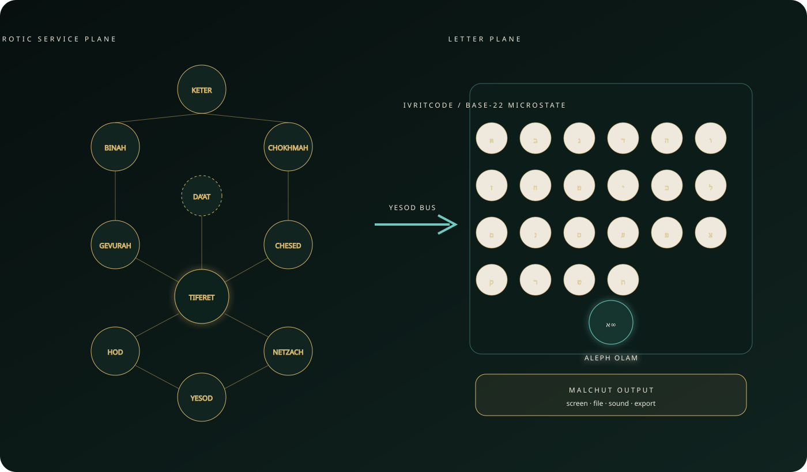

Orchestrate
Keter holds intent. Binah forms and validates. Gevurah enforces policy. Tiferet coordinates the accepted plan.
The Sefirotic Service Plane organizes responsibility; the IvritCode Register Plane performs the canonical deterministic state transition. The shared contract connects the views without duplicating execution.

Keter holds intent. Binah forms and validates. Gevurah enforces policy. Tiferet coordinates the accepted plan.
IvritCode applies Hebrew-letter operations to twenty-two visible base-22 registers and Aleph Olam.
The contract records engine, path-map, seed, final state, and complete trace hash for reproducible exchange.
Da’at selects an inspectable snapshot. Malchut presents screen, sound, file, and export forms without mutating it.
@ivritcode/core is the only register engine. @qec/core owns orchestration and verification. @qec/spec owns stable identifiers and exchange contracts.
Malformed source, invalid seed, incompatible versions, or a failed verification gate produces a typed rejection. No alternate result is synthesized by the visual layer.